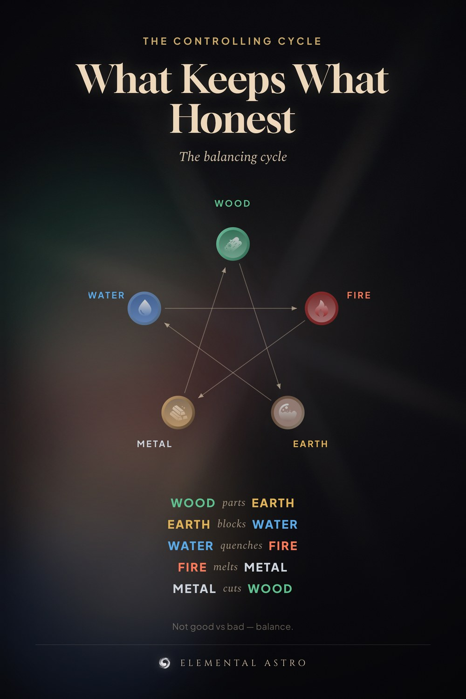

The other half of five element theory that most charts leave out. Wood parts Earth. Earth blocks Water. Water quenches Fire. Fire melts Metal. Metal cuts Wood. This is the controlling cycle. It is not about good and bad elements; it is about which one keeps which one honest. Save it next to the generating cycle. Chinese five elements, element compatibility.
https://www.elementalastro.io/learn/five-elements